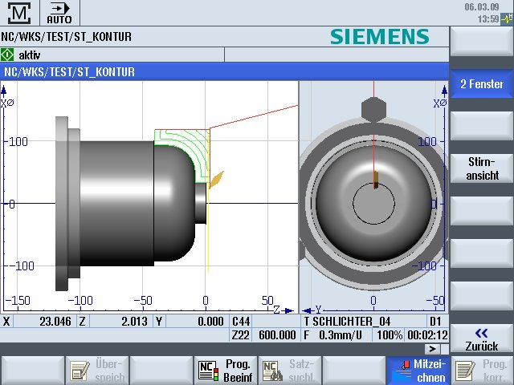

2-window view
The currently active window has a lighter background than the other view windows.
Switch over the active window using the <Next Window> key.
You can change the workpiece display here, e.g. increase or decrease the size, turn it and move it.
Some of the actions that you perform in the active window also have a simultaneous effect in other view windows.
Rapid traverse = red
Feed = green